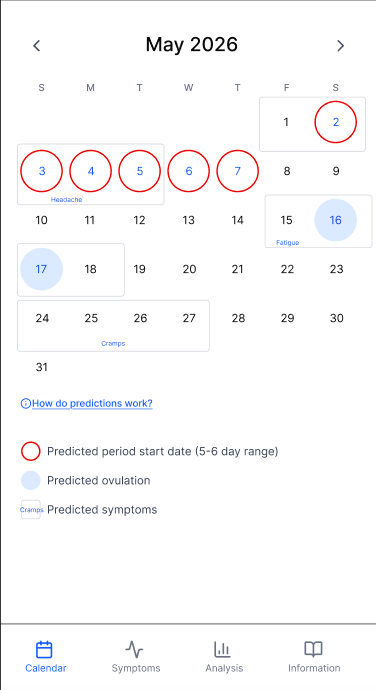
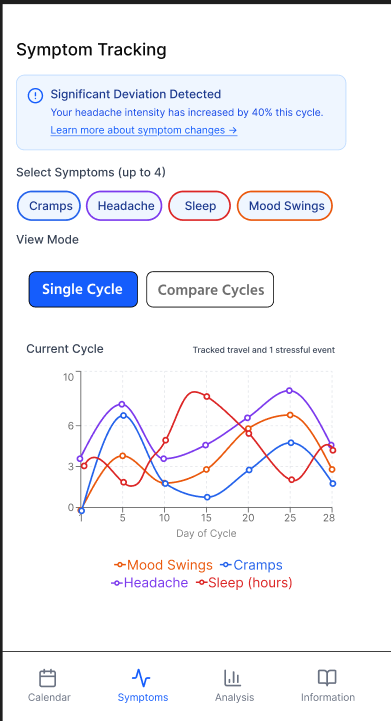
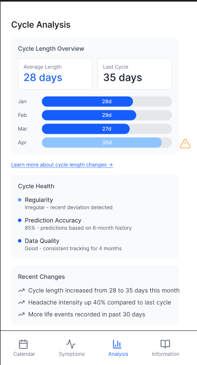
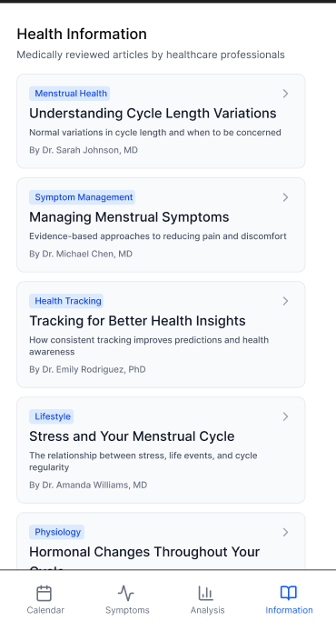
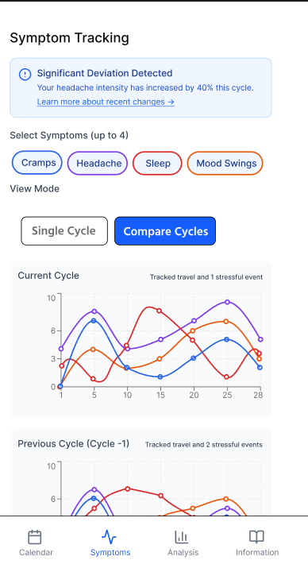
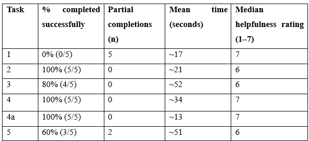

HCI for Health and Wellbeing / Individual
A functional prototype built to test whether uncertainty-aware predictions, multivariate exploration, and cross-cycle reflection actually help users make sense of their menstrual health data.
Overview
This project picked up where the GQM audit left off. Three design goals, and a prototype built to test whether they actually work. The prototype has four views: Calendar, Symptoms, Analysis, and Information. Rather than redesigning Clue in full, it demonstrates how targeted interface decisions could better support menstrual health data exploration.
Design Decisions
Two decisions shaped the prototype throughout. The first was representing uncertainty honestly: a range of plausible dates rather than a fixed prediction, and gradients rather than point markers for symptom forecasts.

The second was embedding contextual events (travel, stress, sleep) across all views, so users can see whether a change in symptoms coincides with something that happened in their life without having to cross-reference manually.
The symptoms view lets you compare up to four signals, flags significant changes, and has a toggle to compare against previous cycles. The analysis view summarises cycle characteristics, highlights deviations, and links to specific explanations when something looks different. The information view surfaces relevant articles contextually when a deviation is detected.
Prototype Screens




Usability Study
A usability study was conducted remotely with five participants, three with prior tracking experience and two without. Participants completed five predefined tasks using think-aloud protocol, rated helpfulness per task on a seven-point scale, and completed a short exit interview. No personal health data was collected.

Four of five tasks had majority completion. Helpfulness ratings ranged between 6 and 7 across tasks.
Findings
Uncertainty windows worked. Every participant said they preferred a range to a fixed date and described it as more realistic.
The explanatory content didn't land. Not one participant opened the 'how predictions work' link without being directed to it. The information was there; it just wasn't visible enough to find.
The biggest finding was that participants defaulted to the calendar for everything, including tasks better handled in the analysis or symptoms tabs. They had spent years using apps where the calendar was the whole product, and that mental model didn't shift just because other views existed.
Next Steps
Make the prediction explanation prominent rather than tucked away. Use higher-contrast colours for deviation alerts. Make 'learn more' links go to the specific explanation rather than a topic index. Replace cycle-day numbers with phase markers so cross-cycle comparison actually makes sense. Integrate contextual factors directly into deviation detection rather than leaving users to connect the dots themselves.